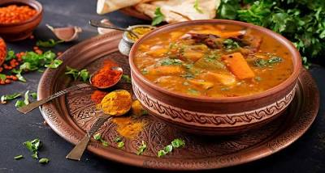

Chhappan Bhog — Comfort of Gods and People
Dalma
ଡାଲ୍ମା
"ଅଗ୍ନି ଦ୍ୱ ଭ୍ୱ ଉଦ୍ ଭୂ ଶ୍ରୀ ଶ୍ରୀ ଜଗନ୍ନାଥ ଭୋଗ ଶ୍ରୟ"
"What is born of fire, earth, and water — in it rests the offering of the Lord."
— Traditional invocation before cooking temple food
Dalma is toor dal simmered with seasonal indigenous vegetables — pumpkin, raw banana, yam, drumstick, eggplant — tempered with panch phoran in ghee. In the Jagannath temple, only ancient desi vegetables are permitted. No potato, no tomato, no chilli powder — peppercorns provide the heat. The dish is cooked in earthen kudhuan pots, stacked one atop the other, never stirred.
Ingredients
- 1 cup toor dal (arhar dal)
- 1 cup pumpkin, cut in cubes
- ½ cup raw banana, sliced
- ½ cup eggplant, cubed
- 1 drumstick, cut in 2-inch pieces
- ½ cup elephant yam (suran), cubed
- 1 tsp turmeric powder
- 1 tsp ginger paste
- 1 tsp whole peppercorns (temple style — no chilli powder)
- 1 tsp panch phoran (equal parts mustard, cumin, nigella, fennel, fenugreek)
- 2 dried red chillies
- ½ tsp asafoetida (hing)
- 2 bay leaves
- 2 tbsp pure ghee
- Salt to taste
- Fresh coconut (grated) and coriander, to finish
Instructions
Wash the toor dal and soak for 4–5 hours. Wash and cut all vegetables into medium-sized 1-inch pieces of roughly equal size — this ensures even cooking.
Pressure cook the soaked dal with 3 cups of water and turmeric until soft (2–3 whistles). Open once pressure drops. The dal should be fully cooked but not mushy.
In a deep pan, transfer the cooked dal. Add water as needed for consistency. Add drumstick, raw banana, and pumpkin — the hardest vegetables first. Add ginger paste, salt, and whole peppercorns.
Cover and cook on medium flame for 10 minutes until the harder vegetables are half cooked. Then add eggplant and yam. Cook for another 10 minutes until all vegetables are cooked through but still hold their shape.
To make the tempering: heat ghee in a small pan. Add panch phoran and let it splutter fully. Add hing, bay leaves, and broken red chillies. Fry for 30 seconds.
Pour the tempering into the dalma. Add ginger paste and stir. Simmer together for 3–4 minutes on low flame so all the flavours blend.
Turn off the flame. Add freshly grated coconut. Cover and rest for 5 minutes. Finish with chopped coriander. Serve with steamed white rice and a spoon of ghee on top.